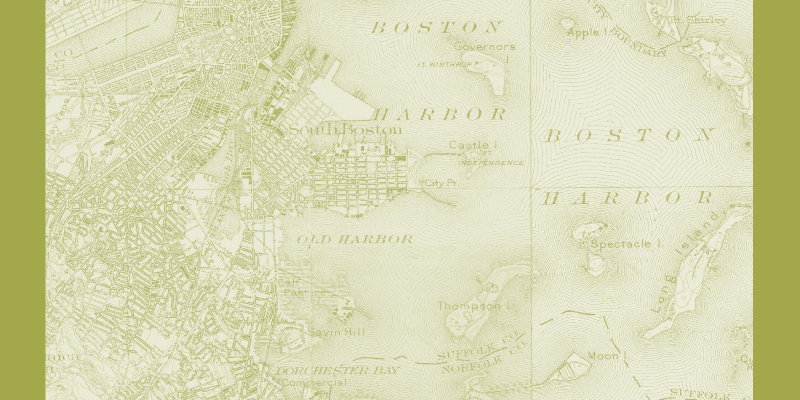

The ‘life of the city’ can be reduced neither to the rational functionality of the modern city nor to the nostalgic and colorful pastiches of the past. The challenge for urbanists is how to combine rationality with imagination, the prosaic with the dream world, the planned with the unexpected—the city as the site of multiple representations and multiple desires.
Mohsen Mostafavi — In the Life of Cities
City · Landscape
This studio aims to conceptualize and articulate the adaptive city — the city in a state of flux as it responds to changing environmental, programmatic, market, and sociocultural conditions and circumstances. The studio places emphasis on the contingent, the provisional, and the conditional, and asks students to amplify productive instabilities while inventing new types of urban and landscape form. Landscape offers a distinct starting point for the project of city making. On the one hand, landscape has the ability to address and integrate the multiple environmental, infrastructural, social, and scalar challenges at play in urban design, absorbing and hybridizing functions and initiatives in ways that architecture or planning alone cannot. On the other, landscape offers operational frameworks and modes of working that emphasize dynamics, change, and improvisation — mechanisms that are as much in play in ecosystems as they are in cities. Consequently, this studio uses landscape both as medium and as mechanism for testing and prototyping ideas on city making, and utilizes working methodologies that privilege experimentation and iterative modeling — playful and critical prototyping — that could suggest pathways toward new landscape-based approaches to urban form.“…a field condition could be any formal or spatial matrix capable of unifying diverse elements while respecting the identity of each. Field configurations are loosely bound aggregates characterized by porosity and local interconnectivity.”

About the studio
Landscape Architecture III (GSD 1211) is the Master of Landscape Architecture core studio III at the Harvard University Graduate School of Design. Taught as a coordinated studio, it engages the adaptive city — the city in a state of flux responding to changing environmental, programmatic, market, and sociocultural conditions. The first two-thirds of the semester are organized as a series of three prototyping workshops (landforms + water flows; programs + circulation and vegetal systems; buildings + public spaces); the final third, Adaptive Assemblies: Urban Districts, synthesizes those prototypes into city districts on a site in South Boston, on the coast of Boston Harbor.
Two iterations are documented here: Fall 2015, Land-Scape Land-Form Urban-Form — Prototyping the City (coordinated by Chris Reed), sited at Allston Landing along the Charles River; and Fall 2016, The Adaptive City (coordinated by Sergio Lopez-Pineiro), sited in South Boston.
Faculty (Fall 2016): Fionn Byrne, Bradley Cantrell, Susannah Drake, Sergio Lopez-Pineiro (Coordinator), David Mah, and Pablo Perez Ramos; Jonathan Scelsa (Preterm Workshop). Teaching assistants: Mark Jongman-Sereno, Dana Kash, Alexandra Mei, Christopher Reznich, Soo Ran Shin, Andrea Soto, Jonah Susskind. Advising faculty: Chris Reed. Meeting: Mondays and Thursdays, 12:30–18:00.